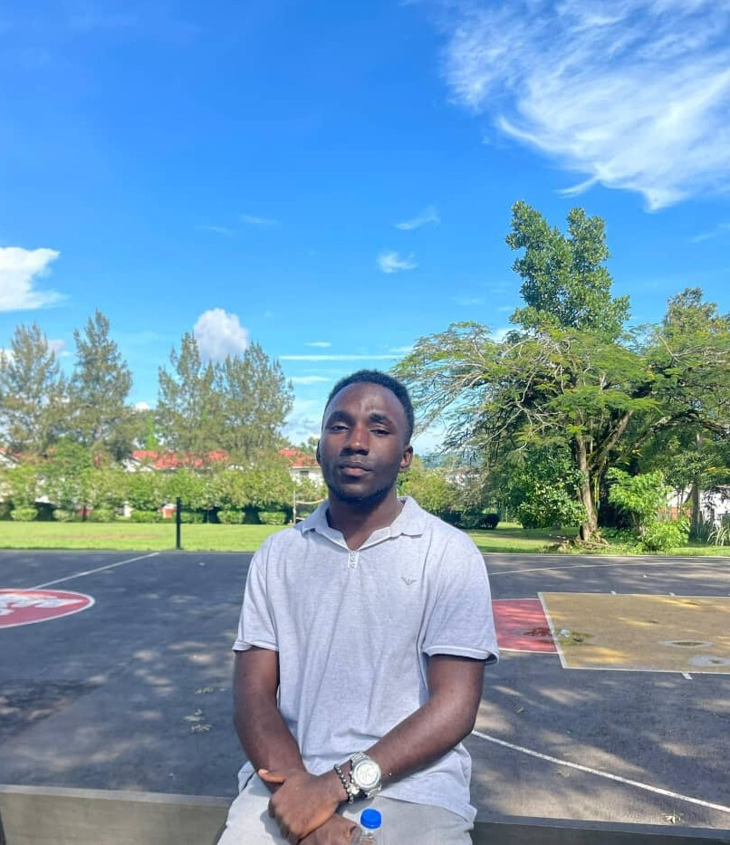
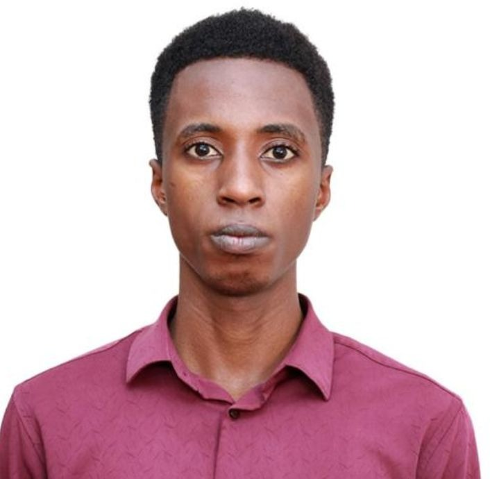

The visionaries behind our mission
Our leadership team combines decades of experience in community development, public health, and education with deep roots in the Rwenzori region.

Muhindo Benard
Born and raised in Kasese District, Muhindo founded HRFR in 2016 with $500 and a borrowed classroom. He holds a degree in Community Development and has dedicated his life to grassroots social change.

Atugonza Joel Timothy
Atugonza oversees all program design and implementation. With 8 years in rural development, he ensures every initiative is community-led and measurable. He holds an MA in Development Studies.

Olyema John Kevin
A public health specialist with a passion for rural medicine, Olyema John Kevin designed our mobile clinic model that now serves 500+ patients annually across 15 villages.